In particular, you can install Android-x86 to an NTFS filesystem to co-exist with Windows. See the Advanced Section for more details.
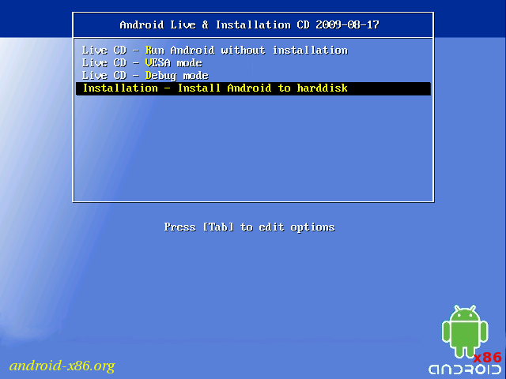
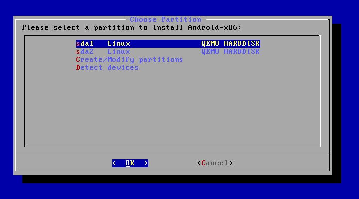
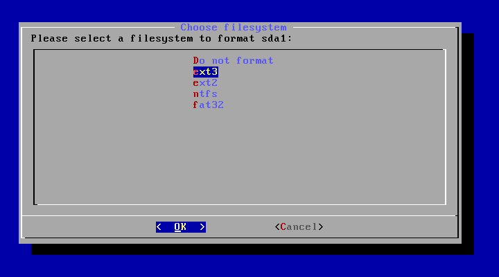
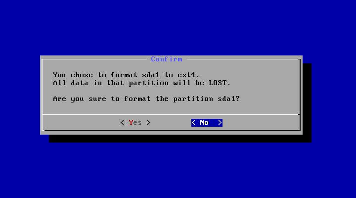
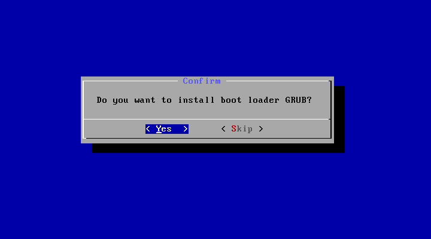
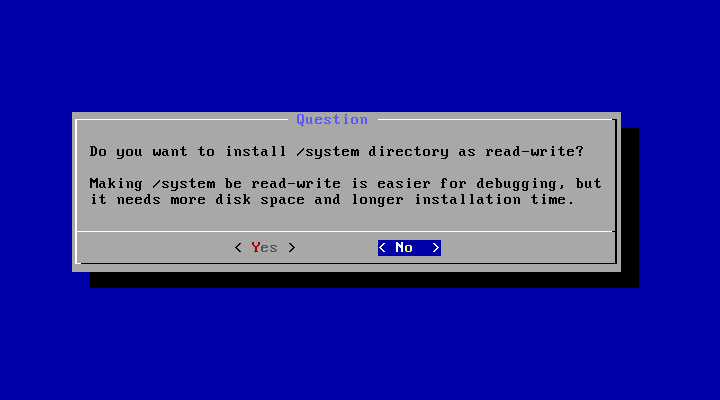
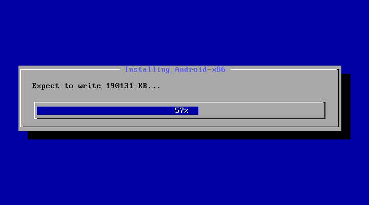
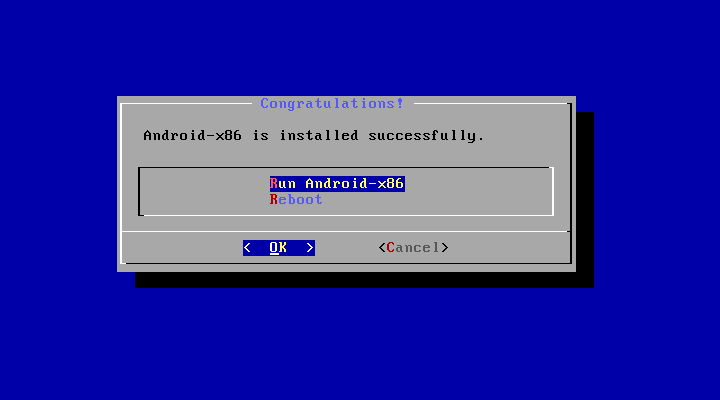
You may upgrade an older Android-x86 installation by the installer. Just select the partition containing the older installation. The installer will prompt if you'd like to upgrade it:
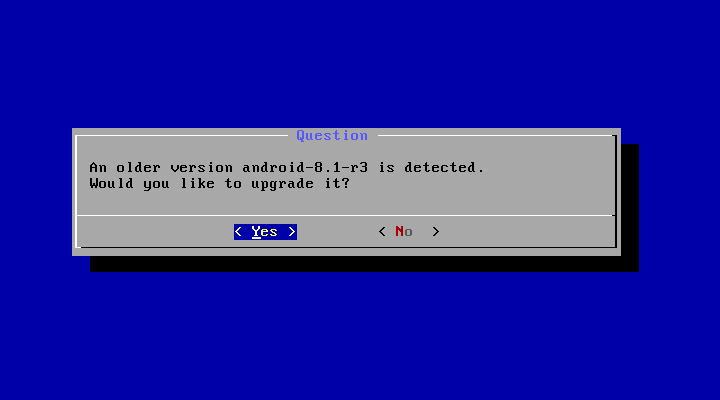Select 'Yes' to upgrade it. Select 'No' to install the new version to a new directory and keep the older installation untouched.
If there are multiple older versions in the same partition, the installer will ask which version to upgrade:
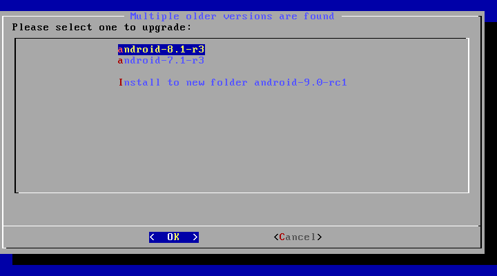Select the one you want to upgrade, or choose to install to a new folder.
If you want to use Android-x86 as the only OS in your device, you may choose "Auto Installation" under the "Advanced options".
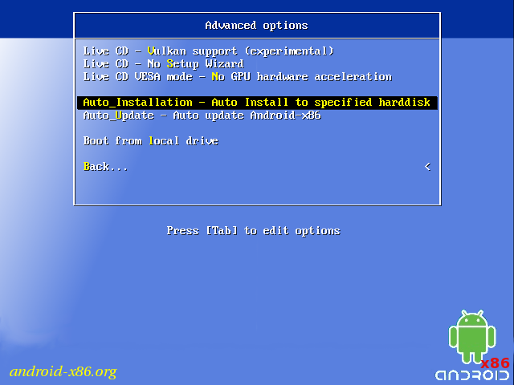
The installer will prompt you to confirm:
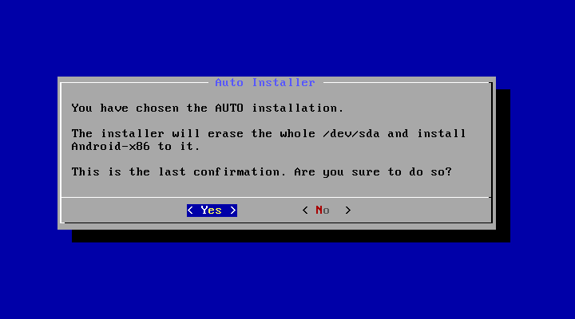
After you select 'Yes', the installer will erase the whole content of the hard disk, partition and install Android-x86 to it.
If you have multiple hard drives, the installer will let you choose which one to use. Be careful to choose the correct one.
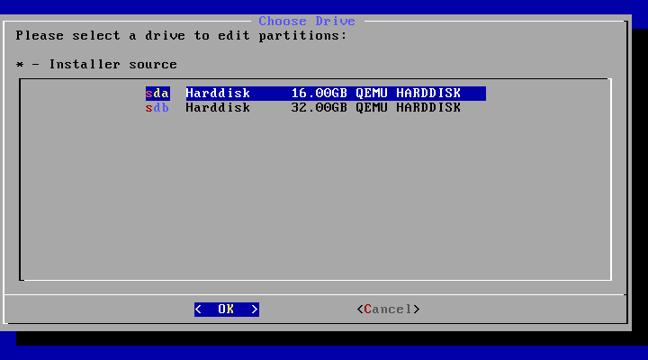
By choosing "Auto Update" under the "Advanced options", the installer could update an older installation automatically.
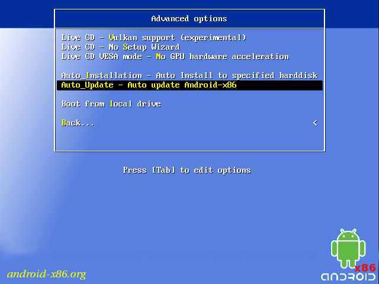
In this mode, the installer searches a partition named "Android-x86" or the first ext4 partition, and update the older installation in it automatically. If no such a partition is found, the auto update mode will be cancelled.
The item means to boot Android-x86 directly. This is useful to check if your hardware is compatible with Android-x86 quickly. All data is stored in RAM (tmpfs) and will lose after poweroff.
See the debug howto for more details.
Enable the experimental Vulkan support. Not all GPUs support it.
Skip the Setup Wizard. It's useful if you want to test some apps quickly in live mode.
Disable GPU hardware acceleration. If you encounter black screen after booting, you may try this mode to see if it's bootable.
There are several tools which could be used to create a bootable USB stick for Android-x86. The following tools are available for Windows users:
For Linux users, just use the standard dd command like:
dd if=android-x86_64-9.0-rc1.iso of=/dev/sdX
To boot other operating systems, you have to add items for them to /grub/menu.lst. For example, to boot Windows, add the following:
This assumes Windows is installed to the first partition of the first hard disk. Alternatively, you need to change rootnoverify to the appropriate value. See Grub Manual for details.
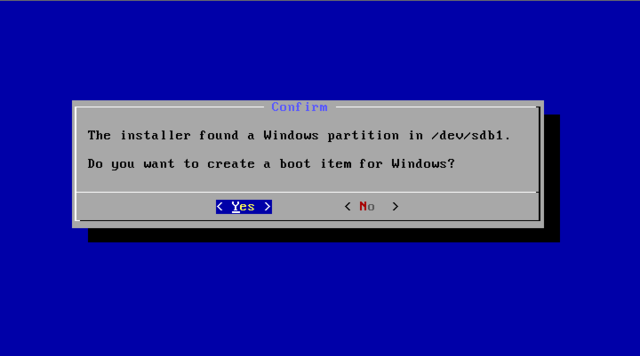
You have to change your virtual disk type to be IDE because the default type in VMware is SCSI, and Android-x86 kernel is not configured to support SCSI. You can follow these steps: